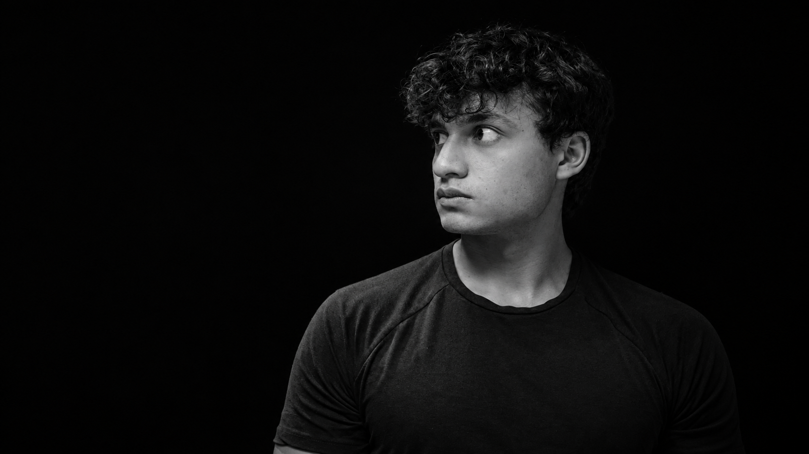
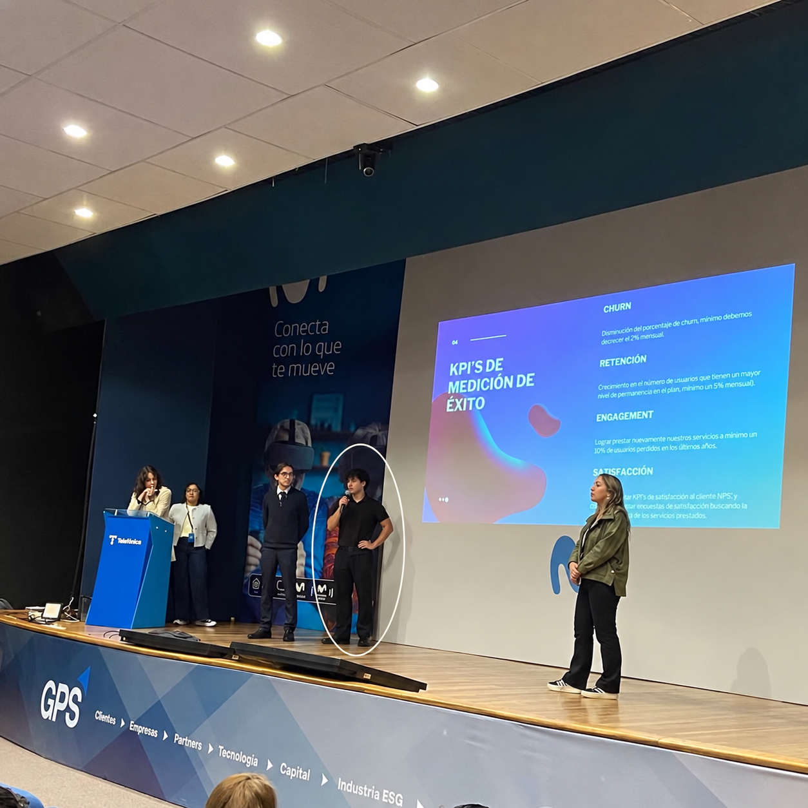

SAMUELCHARRYPORTAFOLIO
Systems & Computing Engineering.
Curious by nature. Learning by
building.
01 / ABOUTA LITTLE CONTEXT
THE PERSON
BEHIND
THE CODE.
Hi, I'm Samuel. I like understanding how things work. Then making them work a little better.
I'm a final-semester Systems & Computing Engineering student at Universidad de los Andes in Bogotá. I work at the intersection of embedded systems and machine learning, and I enjoy building things end to end — from the model to the app and the infrastructure around it.
I like leading teams and taking initiative. Asking the first question, getting people together, and turning an idea into something we can actually try.
I'm looking for an internship or junior role, in Bogotá or remotely, where I can build real systems alongside engineers I can learn from.
Let's talk
TOOLS I WORK WITH
Python · C/C++ · Java · Node.js · SQL · Git · Flutter · PyTorch
02 / PROJECTSA FEW THINGS I'VE PUT MY MIND TO
NOW
SHOWING.
A few projects. Different questions.
The same urge to figure
things out.
Kevin's Joyeros
Case study in progressWords into data
Multiclass text classificationLearning at the edge
Embedded systems × ML
03 / EDUCATIONALWAYS A STUDENT
STILL
ASKING
WHY.
2023 — 2027 · IN PROGRESS
Universidad
Universidad
de los Andes
Systems & Computing Engineering
Bogotá, Colombia
Learning with other people
- Hacker HiveResearch group · Member
- Quantum ComputingResearch group · Member
- Computer SocietyMember
- HPC SupportVolunteer · 2024–present
Certifications & learning
01IELTS Academic
Overall 7.5 · English C1
HPC Summer School
Universidad de los Andes · 20 academic hours
Also studied: Introduction to High-Performance Computing · edX.
04 / WORKTHE NEXT CHAPTER
EVERYONE
STARTS
SOMEWHERE.
I'm looking for my first opportunity.
Maybe it starts with a
conversation.
I bring hands-on projects, curiosity, and a willingness to take initiative. I'm looking for an internship or junior engineering role where I can contribute, ask questions, and keep learning.
BOGOTÁ OR REMOTE
Let's talk